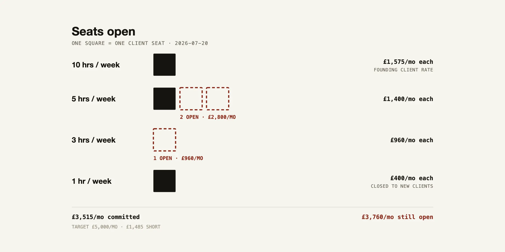
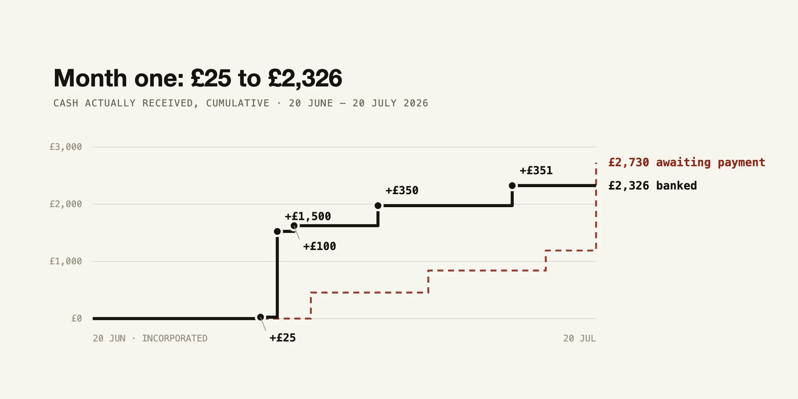
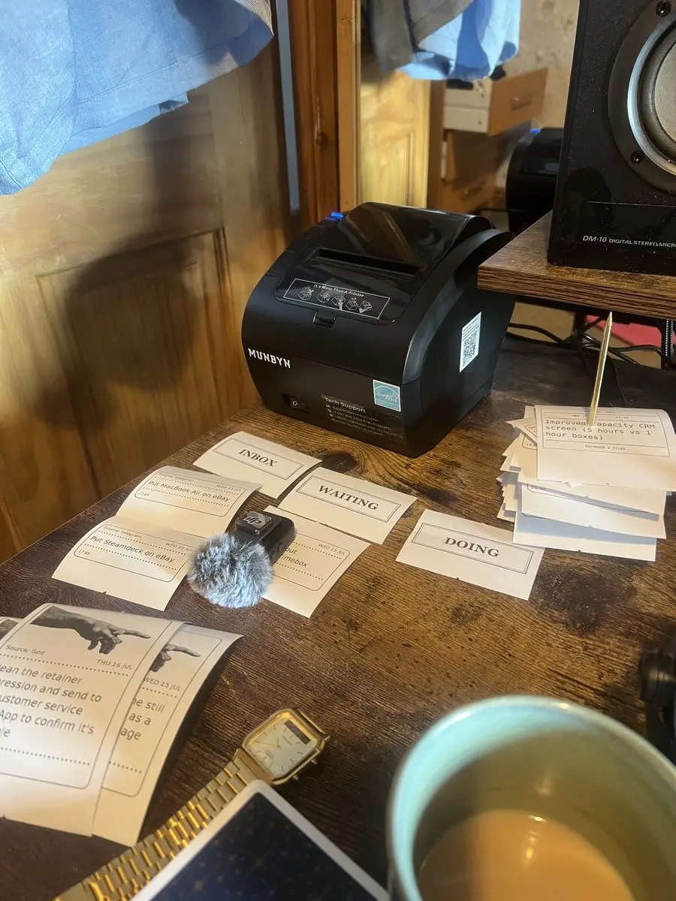
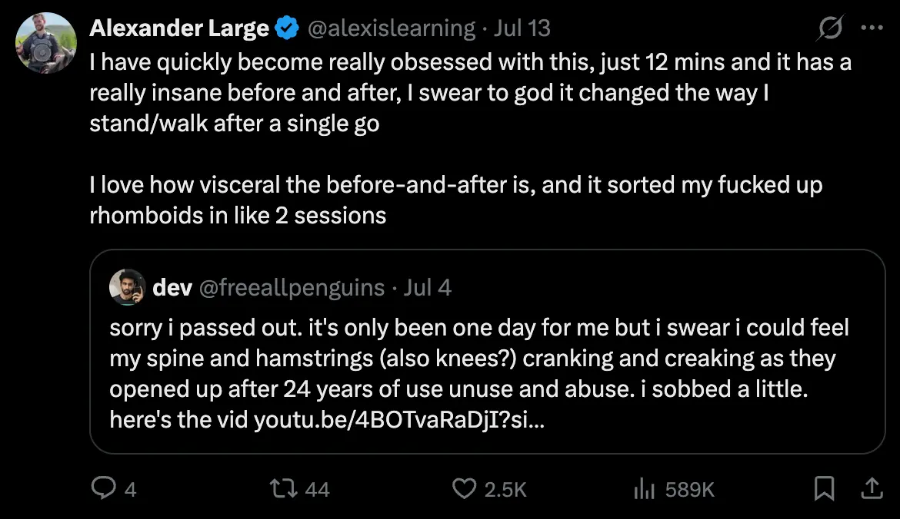

- Log per day - 2026
- 2026-07-20
- Published this as a substack
My version
Hello!
It’s the one month anniversary of my company (A Large Company) being incorporated. I’ve been excitedly waiting for this day to write this, and I want to write a monthly update going forwards.
The TLDR is basically just “it’s working!“. I have discovered a niche, I’ve just finished 4 weeks of 5-hours-a-week with one client who has now just renewed for another 4 week block, it’s going well 😎


What I do?
The headline pitch is something like “Giving people more executive function at work” (my offer page is here)
There’s the Peter Thiel thing of like, “what’s something you believe that most people don’t”. I don’t know if this quite qualifies, but it does feel like there’s a norm of “hire someone (an Effective Altruist, say) for a full time role, have them have a call with their manager for 1-2 hours a week, and other than that, just leave them to it”. This doesn’t factor in the fact that there’s such an enormous amount to juggle as a knowledge worker. Huge low hanging fruit here IMO.
This feels like a field that will grow - I had a call with Pranab of Attentional Copilot and he agreed that this is just an obvious market that we’re super early to: people (perhaps post-rationalist, ~meditation and ~emotional work informed people) plugging into orgs to give operators more executive function. The ultimate thesis being something like knowledge work is hard, it’s hard to prioritise alone, it’s hard to execute on everything, it’s hard to track your weekly and monthly priorities, it’s hard to face the tasks that are especially aversive to you (i.e. “ugh fields”).
Why this is exciting
I had been dipping my toe into the ~coaching waters for around 2 months before setting up the company, starting with me discovering that a process of “co-thinking” for around one hour a day with the lovely woman I was dating was a) super useful for her and b) super fun and easy for me. This led to a whole “holy shit, there’s something very real here w/r/t how there are some things that are very hard to think about solo but very easy to do when in dialogue with someone who doesn’t have your emotional blocks about your problems”, etc.
Cue a month or two of trying this with more people, gradually feeling ok about charging money for it, etc, and then I decided that “there’s a real ‘here’ here” and thought that incorporating would be a fun next step.
I don’t think it actually makes sense to have a corporation at this stage from a tax POV, but the idea of being the Director of A Large Company
- Made me lol
- Felt like an important part of the “taking myself more seriously” phase of the “post-rationalist healing arc”, where I’m now stepping into more Main Character Energy
The shape of work
Started with adhoc 1-hour-a-week ~conventional coaching, and no longer want to do this
After that, I did ad-hoc paid sessions with friends and people from Twitter. This was good but ultimately something I don’t want to carry forwards! People paying out of their own pocket, for 1 hour a week, isn’t a good combo IMO. It’s really tough to get momentum, and to feel good about how much value I’m adding.
[In the process of writing this, I’ve just had Claude remove the 1 hour/week offer from my website]
“Organisation pays, 5 hours a week” is ideal
The much better shape is what I do with a client who I work with for ~5 hours a week. This currently looks like an hour kickoff call on a Monday, and then two 30 minute calls per week for the rest of the week (morning and afternoon). This client is a manager and we co-think (honestly it’s almost all him and I’m creating the container, sometimes making mindmaps as we go to track threads to return to, note cruxes and uncertainties etc).
10 hours a week → partner’s business
I do ~10 hours a week at a discounted girlfriend rate for my solopreneur girlfriend, chief-of-staff, operational-type stuff, more “let them be the solopreneur visionary and let me handle the operational stuff”, “visionary-vs-integrator from the book Rocket Fuel” thing.
Unsure how long we’ll do this for, e.g. once things are running more smoothly for her, could make sense for her to outsource to other people so I can free up more capacity for non-girlfriend-rate-paying work, which could then be reinvested in more sushi and white wine and cute trips etc 😎
Main learnings
- I’ve found a niche and it’s going well! I’m now billing the org of the 5 hours a week client in 4 week blocks, rather than weekly, which I think is a clear sign of “yes this person wants to continue and yes I’m clearly adding value”
- 1 hour a week kinda sucks and I want to avoid it going forwards, I might even remove it from my website
- Plugging into an org, working with someone who has a full time job to help them do their full time job more effectively/efficiently, feels better than helping a ~friend for 1 hour a week who is trying to gain momentum but isn’t super sure if they want to etc
- Warm leads are king - client acquisition is aversive as hell and it’s hard to get people to sign up for intro sessions, so warm leads, referrals and testimonials feel like the way here
- It’s working!
- I’m underbooked at the minute and I really like the spaciousness. Obviously I’m earning less than it looks like on paper because of personal and corporation tax, but I’m really pleased to think back to when I got paid like £1.6k after tax at a data analyst job (£27k), and how I’m now getting paid much better because I found my niche and exist as a kind of n-of-1. There isn’t quite a name for a “person who adds executive function to operators at ~5 hours a week” yet
Overall it’s going well hell yeah
Other personal updates
- I’ve started doing open awareness meditation and really enjoying it, feels like meditation is becoming a genuine positive flywheel that I look forward to, actual before and after
- I’ve made a container to break my “addiction” to comedy podcasts and youtube, which has immediately made my life much better. It was easy actually, and life feels much richer now I’m meditating and reading rather than watching Katseye youtube videos and putting on my favourite podcast every time I go to the bathroom or make a cup of tea (I’ve hidden my airpods in the shed)
- I made this “vibes” website and really like it
- I’ve connected a Raspberry Pi mini-computer to a restaurant chit printer to make a satisfyingly analogue to-do-list system

- I realised that you can learn by reading + thinking, duh, dumbass
- I discovered the “12 Minute Foundation Exercise” back stretch video and can’t believe the amazing before-and-after of it, it’s wild. It made me realise that motivation is easy when there’s a vivid before-and-after, which I used to inform my return to meditation

Claude’s version
Which I imagine will be rancid, but also contain stuff that I didn’t capture
To the shareholder (hello, it’s me),
A Large Company Ltd was incorporated on 20 June 2026. This is the first of these letters, written one month in. The company has one director, one employee, and one shareholder, all of whom are me — which makes this the most efficient investor-relations exercise in the country.
Why the company exists: I sell thinking. Daily and weekly co-thinking calls for operators — mostly stressed, spread-too-thin people in the EA / AI-safety world — who have things on their plate that are icky to face alone. The company is the engine for one specific goal: £5,000/mo in signed recurring income, which is the bar I’ve set for moving to Portugal to live with my partner, durably. Every number below is in service of that.
(Worth saying upfront: incorporating was, by my own research, the irrational choice — below ~£50k profit a sole trader pays less. I did it anyway, because I wanted to learn the machinery from the inside and because “A Large Company Ltd” was too funny not to exist. I budget roughly £1k a year for the joke.)
What happened in month one: the company made its first sale five days after incorporating — a week of thinking, £350. The first money to actually arrive was £25, on 30 June, for half a call (the client did half a session that week, so £25 was correct, not a short-pay). There’s something right about the first-ever revenue being twenty-five pounds — the whole business model, validated at the price of a pub lunch.
Over the month the company billed roughly £3.5k, banked £2.3k, spent about £172 on existing (formation, banking), and paid its first dividend — £1,200, board minute and dividend voucher filed by the same person who received the money. [PLACEHOLDER — one line on what paying yourself from your own company actually felt like]
At month end there are three recurring engagements. A team lead at a major org in the niche is the anchor — twice-daily calls, and the proof that the niche exists. There’s a chief-of-staff engagement. And a founder signed mid-month, with an arc I think is worth telling straight: I proposed a bigger version, heard silence for a few days, and then he came back and signed the lean version — self-funded, hard-capped, paid within 24 hours. A win and a lesson in one (the lesson is maybe “offer the lean tier sooner”).
The company also lost two clients this month, both on the same shape: friend-priced, ad-hoc, an hour a week. One cancelled the day before the company’s one-month anniversary, the other quietly wound down. I don’t think that was a pricing failure so much as a shape failure — an engagement with no container evaporates politely. So the company no longer sells that shape. Prepaid four-week containers only, from here.
The signed floor stands at ~£3,700/mo against the £5,000 bar. About £1,190 of the month’s billing is still unpaid — normal payment terms at a large org, not a bad-debt story, but a useful reminder that signing and banking are different sports, and the visa people only care about one of them.
I should also report that the company built an unreasonable amount of machinery for its size — a business brain that recompiles itself nightly, a CRM, a thermal receipt printer that prints the net worth every morning at 08:05. Some of this is a genuine company asset. Some of it is the founder’s well-documented way of avoiding cold outreach. The ratio between the two is a thing I’m watching.
Month two is for: collecting the £1,190, closing the two warm conversations currently on the board, unblocking the case-study machine (waiting on one permission call), and putting actual money in an actual savings account — the visa turns out to care about savings, not monthly income, which reorders things.
What to expect from these letters: one whenever there’s something to say, and a P&L on this site that doesn’t lie.
Best,
Alexander